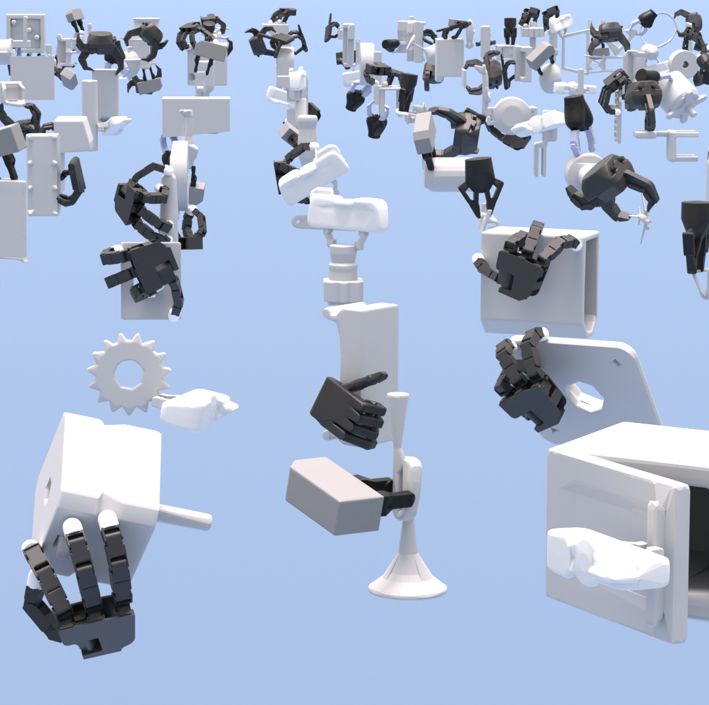
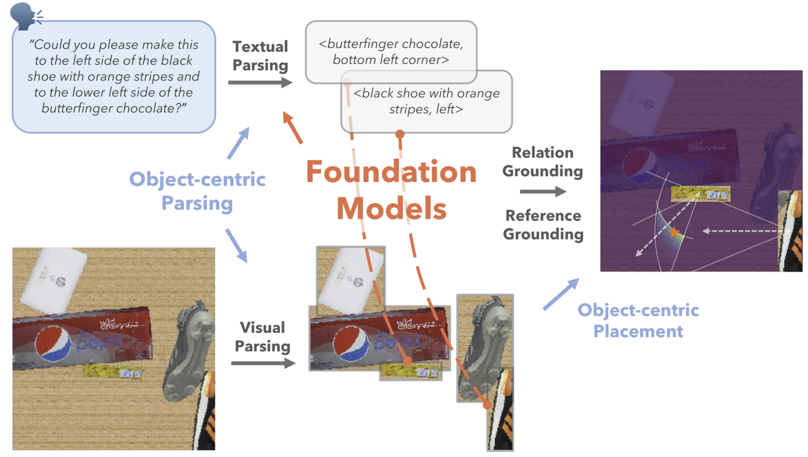
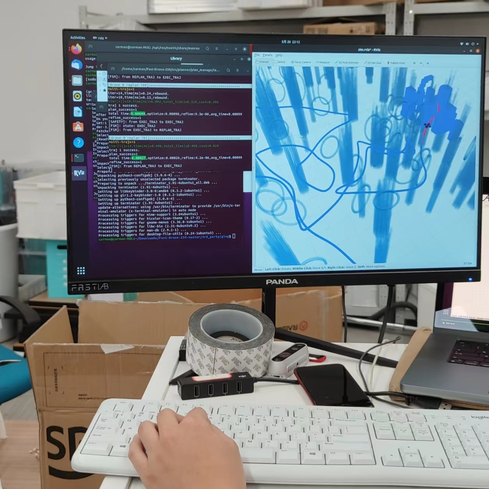
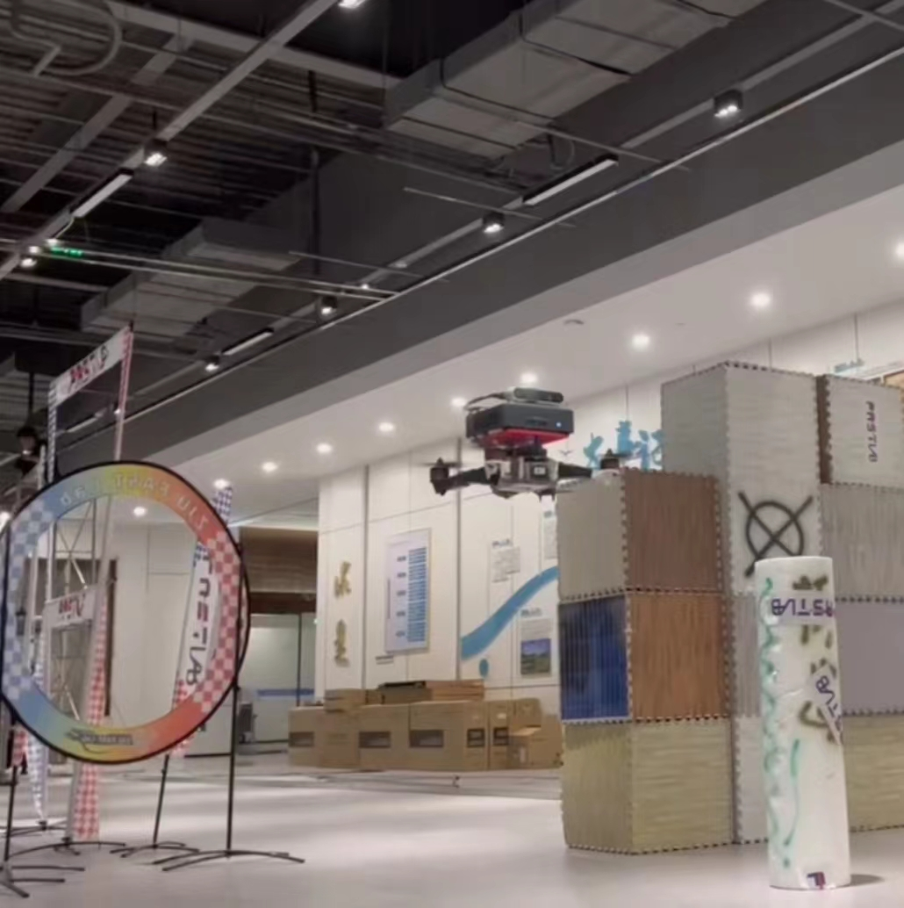
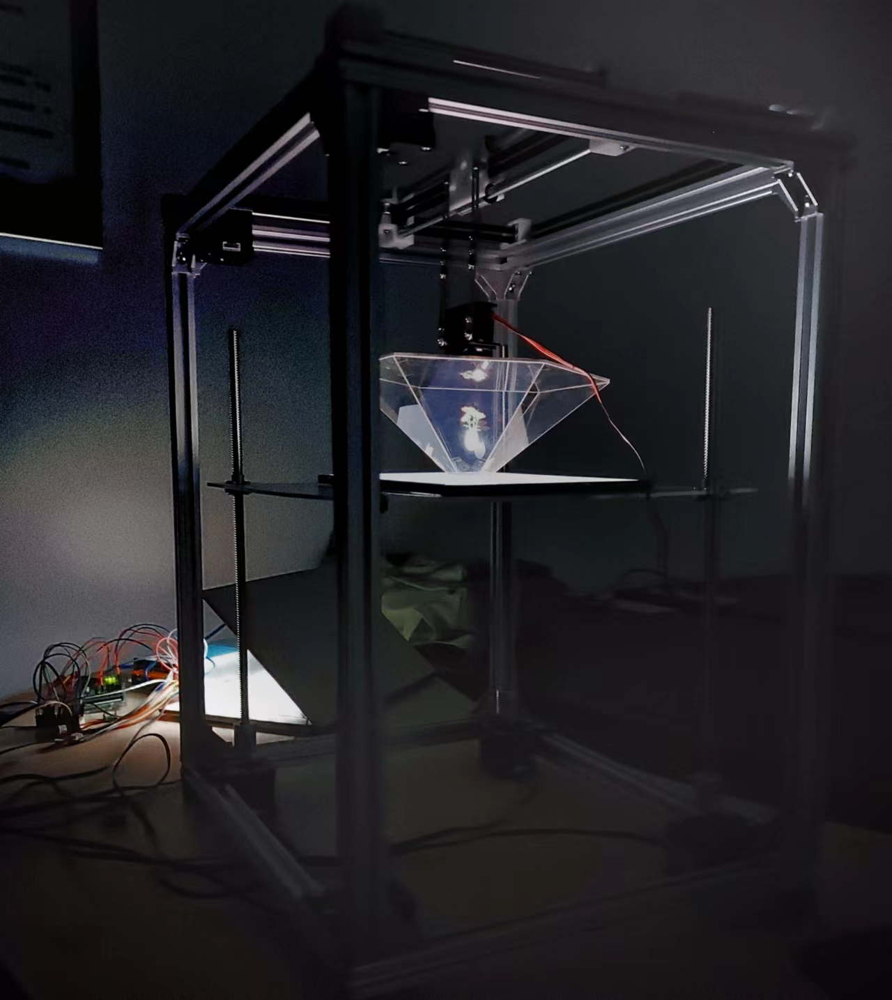
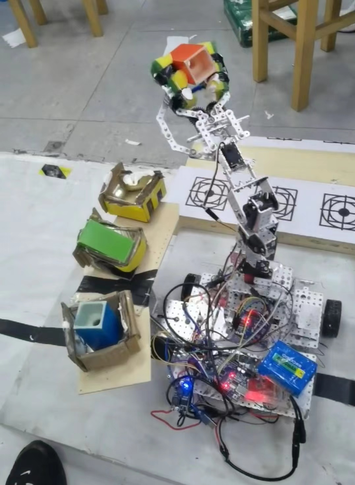
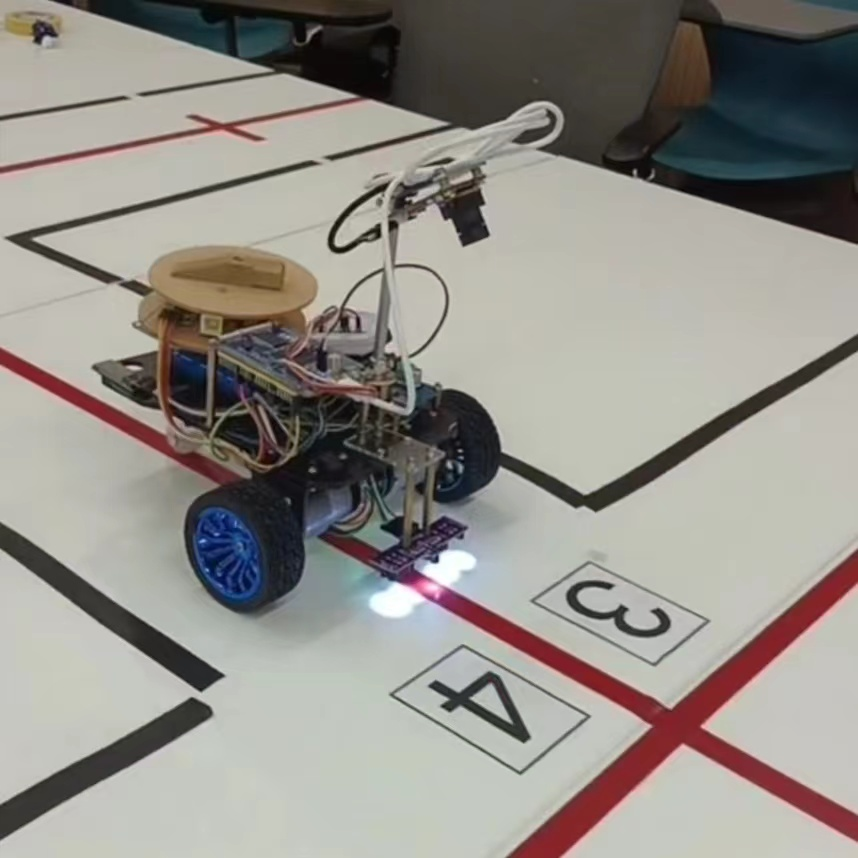

Zhixuan Xu 徐志轩
Hi there! I am a fourth-year undergraduate (Sep. 2020 - ) student of College of Control Science and Engineering and Chu Kochen Honor College at Zhejiang University. I am currently majoring in Robotics Engineering with a minor in Computer Science and Technology. Nowadays, I am a research assistant working with Prof. Lin Shao at NUS. I am also lucky to work with Kechun Xu, Prof. Rong Xiong and Prof. Yue Wang at ZJU.
I'm interested in combining learning and control to enhance generalizable dexteorus manipulation.
Github
Google Scholar
zhixuanxu [at] zju [dot] edu [dot] com


UniContact: A Basic Model for Robotic Manipulation of Contact Synthesis on Rigid and Articulated Rigid Bodies with Arbitrary Manipulators
Gang Yang, Zhixuan Xu, Zixuan Liu, Jichen Sun, Hanwei Fan, Xinghao Zhu, Lin Shao
Under Review
TL;DR: Generated a large scale dataset for contact synthesis and developed a neural network for arbitrary manipulators to choose contact positions on a random rigid or articulated rigid object to generate a specified target wrench. Proposed a collision-free optimization framework to jointly optimize robot configurations, contact force and positions.

Diff-LfD: Contact-aware Model-based Learning from Visual Demonstration for Robotic Manipulation via Differentiable Physics-based Simulation and Rendering
Xinghao Zhu, Jinghan Ke, Zhixuan Xu, Zhixin Sun, Bizhe Bai, Jun Lv, Qingtao Liu, Yuwei Zeng, Qi Ye, Cewu Lu, Masayoshi Tomizuka, Lin Shao
Conference on Robot Learning (CoRL) 2023
★ Oral ★
TL;DR: Proposed a self-supervised approach to reconstruct and extract object shapes and 6D poses from monocular human demonstration RGB videos using differentiable rendering. Combined global contact sampling with a robust gradient approximation technique for model-based robotic manipulation with the aid of differentiable simulation.
Webpage •
Paper

Object-centric Inference for Language Conditioned Placement: A Foundation Model based Approach
Zhixuan Xu, Kechun Xu, Yue Wang, Rong Xiong
IEEE International Conference on Advanced Robotics and Mechatronics (ICARM) 2023
TL;DR: Proposed to leverage pre-trained large language models and visual language models, and to train residual blocks for better generalization to unseen instructions and objects, and for higher sample efficiency.
arXiv •
IEEE
Some of the cute handmade junior toys during my first two years of undergraduate study.

First Place in the 16th “China Control Cup” Robotic Competition for College Students of Zhejiang University |
 
First Place in the 3rd Zhejiang University |
|
  A self-built holographic projection system with remote-controlled positioning and rotation. |
 A self-built mobile manipulator that rearranges blocks according to color requirements. |
 A self-built delivery car that transport goods based on number requirements. |